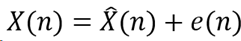

EEC 201 Final Report
Team members:
Chen Wang 916712699 wacwang@ucdavis.edu
Ken Yang 916682693 lsyang@ucdavis.edu
Project Objectives:
For this project, we need to build a
graphical user interface letting people upload a segment of voice recorded and
get a new voice segment which is generated by MATLAB according to the original
voice.
After receiving the void segment, LPC
vocoder will analyze it, compress it and generate a new file with lower bit
rate, at the same time the vocoder will output the pinch of the voice.
According to the pinch, the program will create a new sound.
What we need to do is to find at least two
ways to estimate the pinch of the voice and compare their spectrums, then
synthesis a new void using this pinch. Furthermore, we can convert a female
voice to a male voice by simply changing the pinch we got.
Plan and Tasks
1.
Load or record a segment
of voice and generate a spectrogram.
2.
Pass the voice through
LPC vocoder to generate a low rate output bits into a file.
3.
Use previous results to
reconstruct the voice with different code rates.
4.
Play back the synthesizer
output and generate its spectrogram for comparison.
5.
Provide at least two ways
of estimating the pitch of the voice signal.
6.
Test the situation of
newscaster reporting, song and two people talking at the same time.
7.
Convert between male and
female voice.
Methodology

Vocal cords represents excitation signal
e(n).
Vocal tract represents H(z).
So, we can get:

(Typical order of H(z) is 8~12)
To get e(n):

And since y(n) is the estimation of
original voice signal s(n), we can replace y(n) by s(n) to compute e(n).[1]
LPC vocoder: LPC vocoder can generate
excitation signal and coefficients of H(z) in the LTI system. By this process,
bit per second is supposed to decrease dramatically. We will only store data
generated from LPC vocoder in files instead of the original voice signal.
Overall method:

Since voices are actually frequency
variance system, so we need to divide the original voice signal into many parts
which are less than 3 milliseconds.
Applied Methods:
LPC
Analysis:
We use the autocorrelation method
introduced in “Speech”. The key theory of this method is to use autocorrelation
function to find the best estimation of input signal which has the smallest erroness. And we use the Yule-Walker equations to estimate
the coefficients of estimation of input signal.

Pitch
Detection
We
try to find the max point (for single person talking situation) in the result
of the autocorrelation function, and refer the value of it as the frequency of
a short frame.
Outcomes and Results:
GUI
Design:
Voice
reconstruct:
We have built a plain LPC vocoder, and the
result is noisy but recognizable and acceptable. The LPC vocoder works better
at low frequency voice and lost recognizability at high frequency voice. And
our pitch function works well to recognize voice or voiceless frames of
original voice.
The
workflow of our system is shown as below:
First, the program needs to get an
original voice from user and the user can choose to record his own voice or
upload an existed voice file. Then the program will compute the pitch, gain,
LPC coefficients, check whether the sound is voice or not of each frame and
store them. When reconstructing the voice, the decoder (synthesizer) will use
these arguments and generate a voice to simulate the original voice. The
original arguments can be adjusted outside the program which may let the code
easy to use and can deal with different cases.
Effect
of different sample rate:
As the spectrograms of two sample
rates(8kHz and 44kHz) shows, the higher sample rate the shaper audio wave,
which means higher quality of reconstructed voice.
Two
people talking:
We can use the same method to calculate
the pitch when only one people talking. The difference of these two cases is
when two people talking together, the autocorrelation function has two main
peaks as the picture shown below. What we need to do is to compute the
frequencies of these two peaks, which are the pitches of these two people’s.
Autocorrelation
function of a frame data when two people talking together
Difference
of newscaster’s reporting and a song:
Newscaster’s reporting is human voice and
should be at most 180 Hz, so the pitch tolerance is strict and only frequency
less than 300 Hz will be calculated by LPC vocoder.
Output
bit rate:
15.5 kbps
References
[1] http://eeweb.poly.edu/iselesni/EL713/Speech/speech.pdf
[2] https://www.mathworks.com/matlabcentral/fileexchange/45321-lpc-vocoder
[3] http://www.seas.ucla.edu/spapl/projects/ee214aW2002/1/report.html
Final Presentation
https://youtu.be/df6rc60LSwA
https://youtu.be/OQ9EetNxkbM